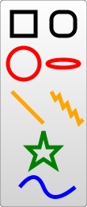

{{ PreviousNext("Web/SVG/Tutorial/Positions", "Web/SVG/Tutorial/Paths") }}
There are several basic shapes used for most SVG drawing. The purpose of these shapes is fairly obvious from their names. Some of the parameters that determine their position and size are given, but an element reference would probably contain more accurate and complete descriptions along with other properties that won't be covered in here. However, since they're used in most SVG documents, it's necessary to give them some sort of introduction.
To insert a shape, you create an element in the document. Different elements correspond to different shapes and take different parameters to describe the size and position of those shapes. Some are slightly redundant in that they can be created by other shapes, but they're all there for your convenience and to keep your SVG documents as short and as readable as possible. All the basic shapes are shown in the image to the right. The code to generate that looks something like:

<?xml version="1.0" standalone="no"?>
<svg width="200" height="250" version="1.1" xmlns="http://www.w3.org/2000/svg">
<rect x="10" y="10" width="30" height="30" stroke="black" fill="transparent" stroke-width="5"/>
<rect x="60" y="10" rx="10" ry="10" width="30" height="30" stroke="black" fill="transparent" stroke-width="5"/>
<circle cx="25" cy="75" r="20" stroke="red" fill="transparent" stroke-width="5"/>
<ellipse cx="75" cy="75" rx="20" ry="5" stroke="red" fill="transparent" stroke-width="5"/>
<line x1="10" x2="50" y1="110" y2="150" stroke="orange" stroke-width="5"/>
<polyline points="60 110 65 120 70 115 75 130 80 125 85 140 90 135 95 150 100 145"
stroke="orange" fill="transparent" stroke-width="5"/>
<polygon points="50 160 55 180 70 180 60 190 65 205 50 195 35 205 40 190 30 180 45 180"
stroke="green" fill="transparent" stroke-width="5"/>
<path d="M20,230 Q40,205 50,230 T90,230" fill="none" stroke="blue" stroke-width="5"/>
</svg>
stroke, stroke-width, and fill attributes are explained later in the tutorial.The {{SVGElement("rect")}} element draws a rectangle on the screen. There are 6 basic attributes that control the position and shape of the rectangles on screen. The one on the right has its rx and ry parameters set, giving it rounded corners. If they're not set, they default to 0.
<rect x="10" y="10" width="30" height="30"/> <rect x="60" y="10" rx="10" ry="10" width="30" height="30"/>
xywidthheightrxryThe {{SVGElement("circle")}} element draws a circle on the screen. It takes 3 basic parameters to determine the shape and size of the element.
<circle cx="25" cy="75" r="20"/>
rcxcyAn {{SVGElement("ellipse")}} is a more general form of the {{SVGElement("circle")}} element, where you can scale the x and y radius (commonly referred to as the semimajor and semiminor axes in maths) of the circle separately.
<ellipse cx="75" cy="75" rx="20" ry="5"/>
rxrycxcyThe {{SVGElement("line")}} element takes the positions of two points as parameters and draws a straight line between them.
<line x1="10" x2="50" y1="110" y2="150"/>
x1y1x2y2A {{SVGElement("polyline")}} is a group of connected straight lines. Since the list of points can get quite long, all the points are included in one attribute:
<polyline points="60, 110 65, 120 70, 115 75, 130 80, 125 85, 140 90, 135 95, 150 100, 145"/>
pointsA list of points. Each number must be separated by a space, comma, EOL, or a line feed character. Each point must contain two numbers: an x coordinate and a y coordinate. So, the list (0,0), (1,1), and (2,2) would be written as 0, 0 1, 1 2, 2.
A {{SVGElement("polygon")}} is similar to a {{SVGElement("polyline")}}, in that it is composed of straight line segments connecting a list of points. For polygons though, the path automatically connects the last point with the first, creating a closed shape.
Note: A rectangle is a type of polygon, so a polygon can be used to create a <rect/> element in cases where you need a little more flexibility.
<polygon points="50, 160 55, 180 70, 180 60, 190 65, 205 50, 195 35, 205 40, 190 30, 180 45, 180"/>
points(0,0), (1,1), and (2,2) would be written as 0, 0 1, 1 2, 2. The drawing then closes the path, so a final straight line would be drawn from (2,2) to (0,0).A {{SVGElement("path")}} is the most general shape that can be used in SVG. Using a path element, you can draw rectangles (with or without rounded corners), circles, ellipses, polylines, and polygons. Basically any of the other types of shapes, bezier curves, quadratic curves, and many more.
For this reason, the next section in this tutorial will be focused on paths. But for now, note that there is a single parameter used to control its shape.
<path d="M20,230 Q40,205 50,230 T90,230" fill="none" stroke="blue" stroke-width="5"/>
d